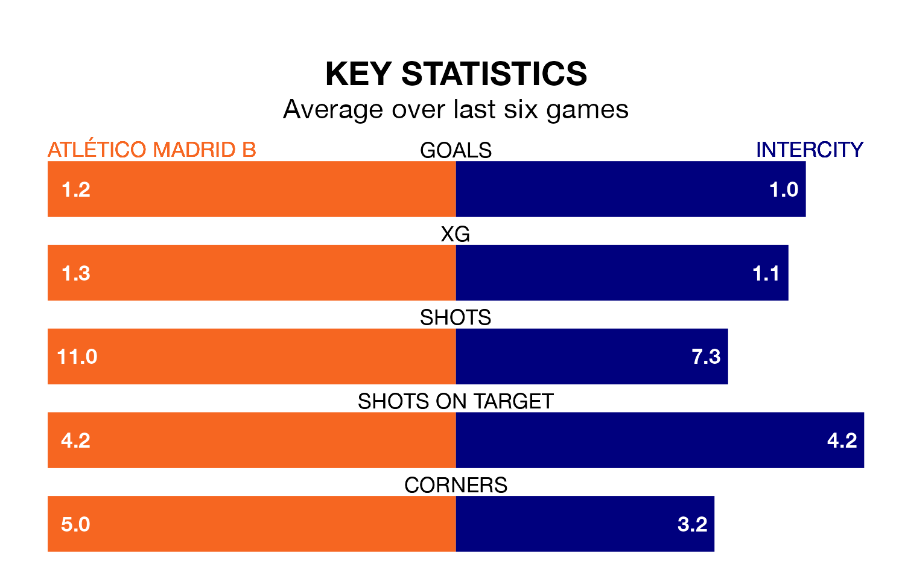

Atlético Madrid B host Intercity on Sunday at Miniestadio Cerro del Espino in Primera Division RFEF Group 2.
In their last league match, on March 24, Atlético Madrid B lost to Granada B 1-0 away.
Intercity won, 2-1 at home against Antequera CF, with Pol Roigé Rodriguez and Álvaro Pérez Durán on the scoresheet.
With 41 goals in 29 games so far this season, Atlético Madrid B are scoring more than average in the league with 1.4 goals per game. But they are conceding more than average too, letting in 37 goals at a rate of 1.3 per game.
Intercity, meanwhile, are average scorers, with 1.1 goals per game. They have also conceded 1.1 goals per game.
In Emilio Nsue López, the visitors have one of the league's most on-form strikers so far this season. He has notched seven goals in 16 appearances, to sit sixth in the scoring charts.
The home side's top scorer, with seven goals in 21 games, is Diego Vicente Bri Carrazoni.
Intercity are eighth in the table after 29 games, of which they have won 11 and drawn eight, earning 41 points.
Atlético Madrid B are four places behind Intercity in 12th, with eight wins and 12 draws putting them on 36 points.
Atlético Madrid B are in mixed form in Primera Division RFEF Group 2, with two wins and three draws from their last six games.
With three wins and three losses over that period, the away team's form is similar – they have both taken nine points from 18.
Updated: 12:16 (UTC), 25/03/24